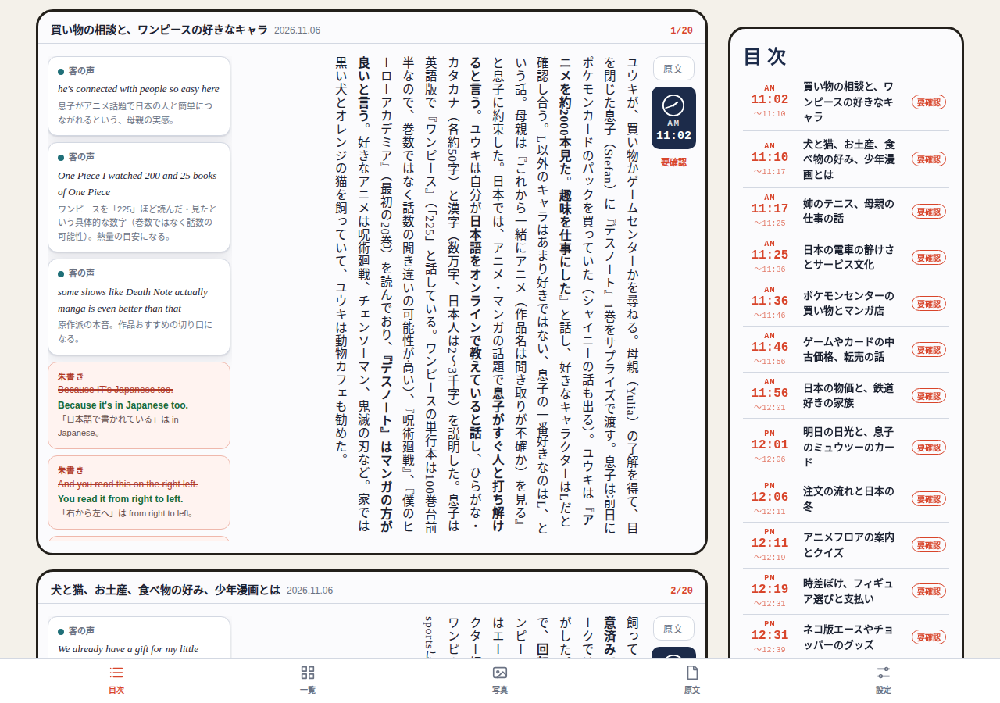
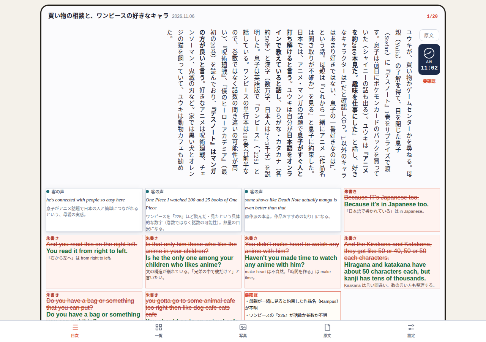

TOUR LOG — READING PAGE PC LAYOUT
つあろぐ 読み物ページ PCレイアウト5案
新形式の読み物ページ（Yuliaさん回・本番そのまま）を土台に、PC幅（1280px）での配置だけを変えた5案です。全案のテーマは、場面カードの縦バランス。左レールのカード（客の声・朱書き）が縦に長くなり、縦書き本文の下に空白ができる問題を、それぞれ違う方法で解消しています。各案の画像は、カードが一番多い場面1（客の声3＋朱書き7＋要確認1）で撮った実レンダリングです。スマホ表示は全案とも現行どおりです。
1
レール内スクロール型
目次は右レールに固定。場面カードの左レールは本文（620px）と同じ高さで止め、溢れたカードはレールの中をスクロールして見る。本文の下に空白を作らない。

案1を実寸で開く ›2
朱書き分離型
左レールは客の声と要確認だけに絞り、量の多い朱書きは本文の下へ2列グリッドで流す。レールと本文の高さが自然に揃い、朱書きも一覧で見比べやすい。
 案2を実寸で開く ›
案2を実寸で開く ›
3
カード下段横並び型
左レールを廃止し、カードは全部、本文の下に横並びグリッドで置く。縦書き本文は高さを抑えて横に広く使い、大きな見出しと合わせた雑誌型。

案3を実寸で開く ›4
2枚制限＋続きを表示型
左サイドにブランドと目次を固定するドキュメント型。場面カードのレールは最初の2枚だけ見せ、残りは「続きのカードを表示」ボタンで開く。一番すっきり収まる。
 案4を実寸で開く ›
案4を実寸で開く ›
5
左右振り分け型
客の声は左レール、朱書き＋要確認は右レールに振り分け、縦書き本文は中央で高い方のレールに合わせて伸ばす。カードを隠さずに本文の下の空白を消す。
 案5を実寸で開く ›
案5を実寸で開く ›
※ 土台は本番の読み物ページ（read/yulia.html 新形式・EXIF修正と本文620px化の反映後）です。本番ページ自体には変更を加えていません。